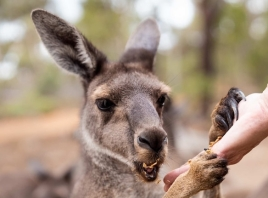

Tue Oct04: Duologues
Table of Contents
-- mode: org --

2. Three Rings for the Elven-kings under the sky
Three Rings for the Elven-kings under the sky,
Seven for the Dwarf-lords in their halls of stone,
Nine for Mortal Men doomed to die,
One for the Dark Lord on his dark throne,
In the Land of Mordor where the Shadows lie
One Ring to rule them all, One Ring to find them,
One Ring to bring them all, and in the darkness bind them,
In the Land of Mordor where the Shadows lie
J.R.R. Tolkien
3. Apollo 11 disaster contingency speech
Player 1:
Fate has ordained that the men who went to the moon to explore in peace will stay on the moon to rest in peace.
These brave men, Neil Armstrong and Edwin Aldrin, know that there is no hope for their recovery. But they also know that there is hope for mankind in their sacrifice.
These two men are laying down their lives in mankind’s most noble goal: the search for truth and understanding.
Player 2:
They will be mourned by their families and friends; they will be mourned by their nation; they will be mourned by the people of the world; they will be mourned by a Mother Earth that dared send two of her sons into the unknown.
In their exploration, they stirred the people of the world to feel as one; in their sacrifice, they bind more tightly the brotherhood of man.
In ancient days, men looked at stars and saw their heroes in the constellations. In modern times, we do much the same, but our heroes are epic men of flesh and blood.
Player 1:
Others will follow, and surely find their way home. Man’s search will not be denied. But these men were the first, and they will remain the foremost in our hearts.
For every human being who looks up at the moon in the nights to come will know that there is some corner of another world that is forever mankind.
William Safire
4. Winston Churchill Duologue
P1:
The British Empire and the French Republic, linked together in their cause and in their need, will defend to the death their native soil, aiding each other like good comrades to the utmost of their strength.
P2:
Even though large tracts of Europe and many old and famous states have fallen or may fall into the grip of the Gestapo and all the odious apparatus of Nazi rule, we shall not flag or fail.
Chorus
We shall not flag or fail
We shall never surrender
We shall go on to the end
Whatever the cost may be
P1:
We shall go on to the end, we shall fight in France, we shall fight on the seas and oceans, we shall fight with growing confidence and growing strength in the air, we shall defend our island, whatever the cost may be.
Chorus
We shall not flag or fail
We shall never surrender
We shall go on to the end
Whatever the cost may be
P2:
We shall fight on the beaches, we shall fight on the landing grounds, we shall fight in the fields and in the streets, we shall fight in the hills;
P1:
We shall never surrender, and even if, which I do not for a moment believe, this island or a large part of it were subjugated and starving, then our Empire beyond the seas, armed and guarded by the British fleet, would carry on the struggle, until, in God's good time, the new world, with all its power and might, steps forth to the rescue and the liberation of the old."
Chorus
We shall not flag or fail
We shall never surrender
We shall go on to the end
Whatever the cost may be
Español!
4.1. Mi Hermana Sally (My sister Sally)
Mi nombre es Luis ~
My name is Luis.
Soy un ingeniero (solucionador de problemas)
~ I am an engineer (problem-solver)
Levanto pesas. Corro en el río de los cisnes.
I lift weights. I jog at the River of Swans.
Mi hermano Martin, es un ingeniero (solucionador de problemas) ~
My brother Martin, is an engineer (problem-solver).
Vive en el valle del silicio ~
He lives in the Valley of Silicon
Le gustan los pastores alemanes ~
He likes German Shepherds.
Le gustan la comida polacka
~ He likes Polish cuisine (food)
Mi hermana Sally es psicóloga
~ My sister (Sally) is a psychologist.
Ella vive en Londres
~ She lives in London.
Le gustan los gatos birmanos
~ She likes Burmese cats.
Le gustan la comida tailandesa
~ She likes Thai cuisine (food)
Amo a todos en mi familia
~ I love everyone in my family
Amo especialmente a Sally
~ I especially love Sally.
Haría cualquier cosa por Sally
~ I would do anything for Sally.
#+ENDCOMMENT